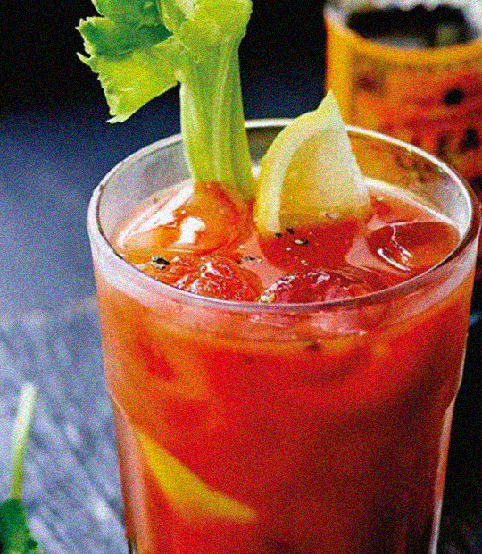

Bloody Mairy
Ingrédients pour 2 cocktails
- 8 cl de vodka
- 24 cl de jus de tomates
- 1 cl de jus de citrons
- 1 cl de sauce worcestershire
- 4 gouttes de tabasco
- Sel de céleriv
- Poivre
- Sel
Préparation
- Agiter les ingrédients dans un verre à mélange avec des glaçons (pour refroidir sans trop diluer).
- Verser dans le verre, puis ajouter à convenance sel de céleri, sel et poivre
- Décorer avec une tige de céleri et optionellement, une rondelle de citron. Servir.